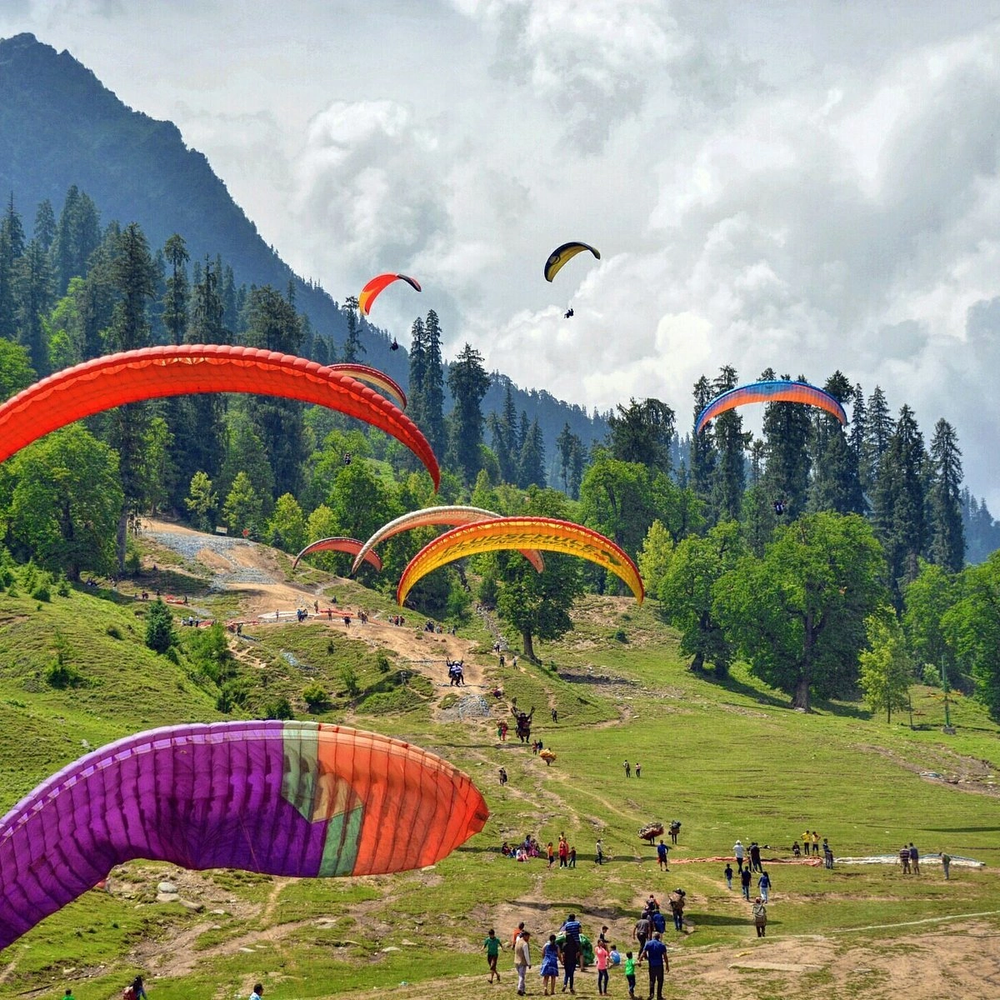
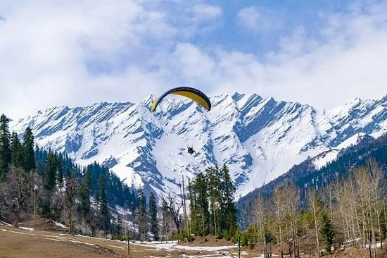
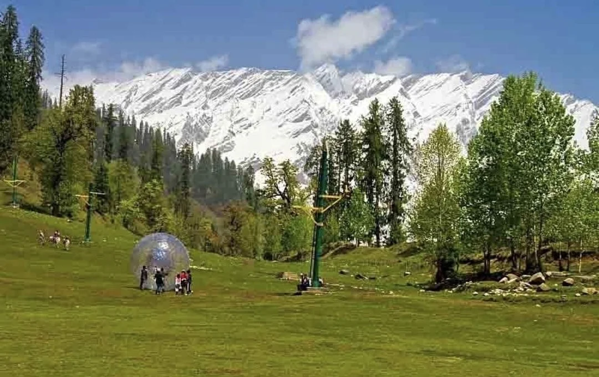
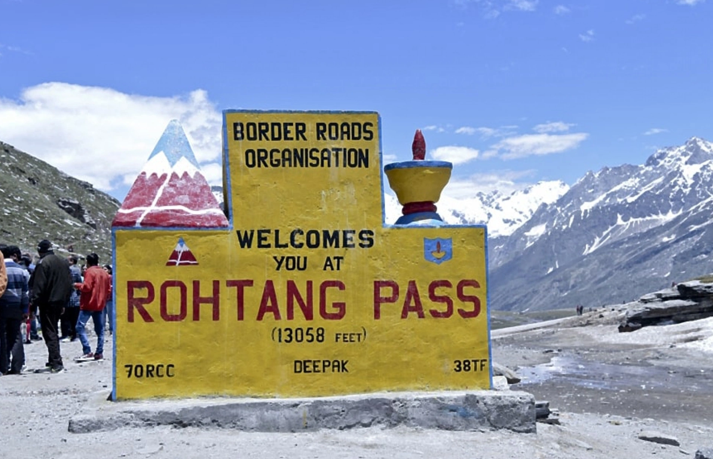
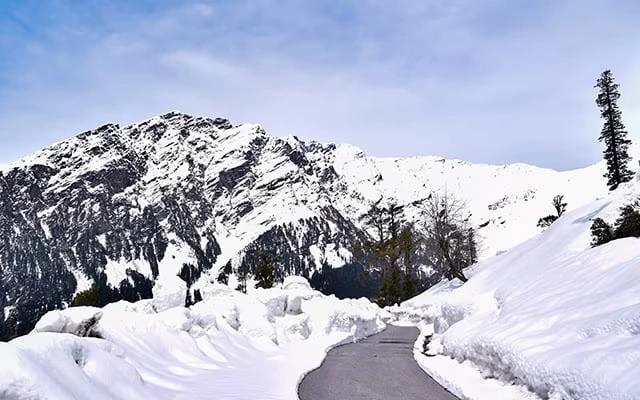
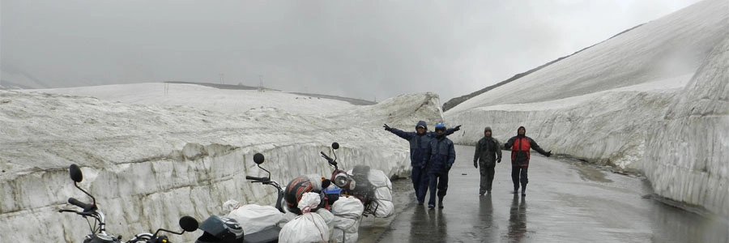
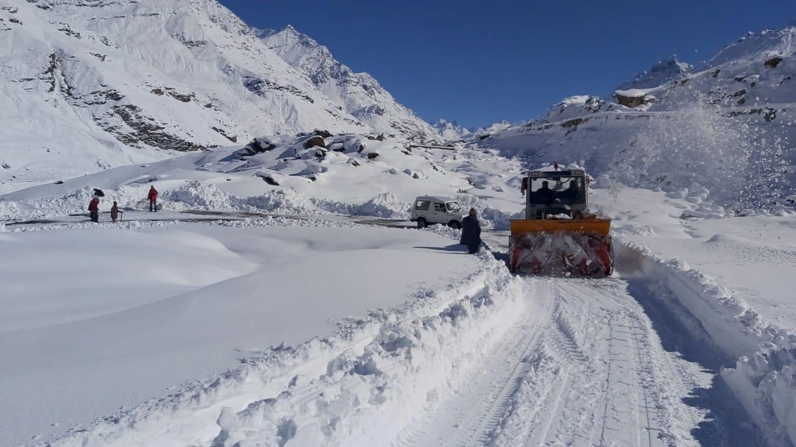

Nestled in the majestic mountains of Himachal Pradesh, Manali is one of India’s most popular hill stations and adventure destinations. Surrounded by snow-covered Himalayan peaks, dense pine forests, beautiful valleys, waterfalls, and the flowing Beas River, Manali attracts travelers from all over the world throughout the year. Whether you are planning a honeymoon, family vacation, adventure trip, backpacking journey, or a peaceful mountain escape, Manali offers the perfect blend of nature, adventure, culture, and relaxation. From thrilling paragliding experiences to scenic cafés and snow adventures, Manali promises unforgettable Himalayan memories.
The history of Manali is deeply connected to Hindu mythology. According to ancient beliefs, Sage Manu — considered the creator of human civilization in Hindu mythology — arrived in this region after a great flood and recreated human life here. The name “Manali” is derived from “Manu-Alaya,” meaning “The Abode of Manu.” Historically, Manali was an important trade route connecting India with Ladakh, Tibet, and Central Asia. Over the years, the town evolved from a quiet mountain village into one of India’s biggest tourism hubs while still preserving its natural beauty and traditional Himachali culture. Today, Manali remains one of the most visited destinations in the Indian Himalayas.
Solang Valley is one of the most famous attractions near Manali and a paradise for adventure lovers. Surrounded by snow-covered mountains and glaciers, Solang Valley offers breathtaking views and thrilling activities throughout the year.
Popular Activities:



Rohtang Pass is one of the most iconic mountain passes in India. Located at a high altitude, Rohtang Pass offers spectacular views of glaciers, snow-covered mountains, rivers, and valleys. The pass remains one of the biggest attractions for tourists visiting Manali during summer months. Popular experiences:




Hidimba Devi Temple is one of the oldest and most famous temples in Manali. Surrounded by cedar forests, the temple is known for its unique wooden architecture and peaceful atmosphere. Built in the 16th century, the temple is dedicated to Hidimba Devi from the Mahabharata.
Old Manali is famous for its charming cafés, live music culture, riverside stays, backpacker hostels, and relaxed mountain vibes. Travelers love Old Manali for:
Atal Tunnel is one of the longest highway tunnels in the world located at high altitude. The tunnel connects Manali with the beautiful Lahaul Valley. Beyond the tunnel lies Sissu, a stunning Himalayan village famous for waterfalls, rivers, snow-covered peaks, and breathtaking landscapes.
Mall Road is the main shopping and tourist area in Manali filled with cafés, restaurants, handicraft shops, bakeries, woollen stores, and local markets. It is one of the best places to enjoy evening walks and explore the lively atmosphere of the town.
Vashisht Temple is famous for natural hot water springs believed to have healing properties. The traditional village atmosphere and mountain scenery make it a peaceful attraction near Manali.
Pleasant weather
Ideal for sightseeing and adventure sports
Perfect for honeymoon trips and family vacations
Temperature: 10°C–25°C
This is one of the peak tourist seasons in Manali.Lush green valleys and forests
Beautiful mountain scenery
Fewer crowds and peaceful atmosphere
However, occasional landslides may affect road travel during heavy rainfall.
Snowfall and winter landscapes
Skiing and snow activities
Romantic atmosphere for couples
Temperature can fall below freezing point
December and January are the best months for snow lovers.
Manali is well connected by road from Delhi, Chandigarh, Shimla, and nearby North Indian cities.
Nearest broad-gauge station is Kalka.
The nearest airport is Bhuntar Airport near Kullu.
Planning a Himachal trip becomes effortless with Wander & Wonder Travels. Our curated Shimla–Kasol–Manali package is designed for travellers seeking the best of Himachal Pradesh.
Why Choose Wander and Wonder Travels?